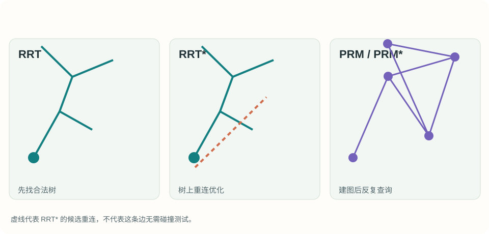
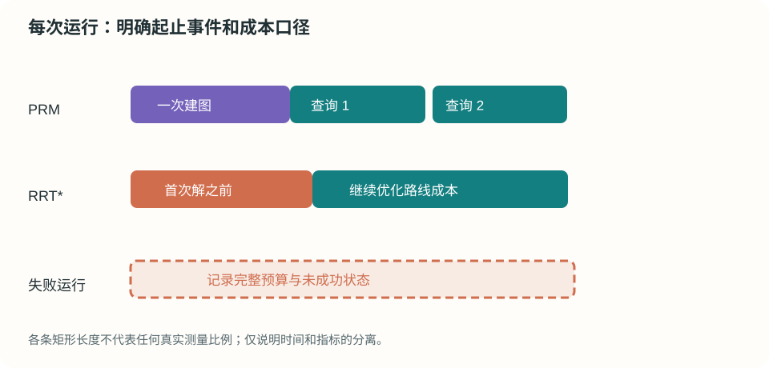

采样规划对比：不要用一个数字代替一场实验
RRT、RRT*、PRM、PRM* 各自解决的查询和优化问题并不相同。学会设定相同任务、分离成功率与质量、报告预算和种子，才能得到可复查的结论。
如果一个方法 0.1 秒找到路径，另一个 2 秒找到路径，谁更好？
除非明确两者是否在同一空间、同一碰撞模型、同一随机预算下求解，单纯比较秒数几乎没有意义。PRM 的一次建图可以服务很多次查询，RRT 常为当前起点生长树，RRT* 可能在第一条解出现后继续优化，三者连“什么时候停止计时”都不同。
采样规划至少有三个不同目标：可行性（是否能找到一条无碰撞路线）、解质量（长度、风险、能量等代价）和计算资源（时间、碰撞调用、内存）。这些量相互关联，但并不能合并为唯一“性能分数”。
COMPARATIVE EXPERIMENTS · 14

从问题结构出发，而不是看算法名称的流行程度
| 方法 | 搜索对象 | 典型查询结构 | 最优性与边界 |
|---|---|---|---|
| RRT | 从起点生长树 | 单起终点 / 尽快求可行解 | 适当条件下概率完备；一般不渐进最优 |
| RRT* | 带选父与重连的树 | 单次规划，可持续改进 | 满足论文条件时渐进最优，有限时间不保证达到最优 |
| PRM | 自由状态图，常有环 | 静态环境，多次查询 | 近邻策略决定理论性质，固定k不自动渐进最优 |
| PRM* | 渐进连接尺度的路网 | 多次查询 + 追求最优 | 满足采样与连边条件时渐进最优 |
| Informed RRT* | 有解后聚焦可能改进的区域 | 单次长度优化 | 需要匹配目标函数的可纳下界 |
此表描述的是理论与结构，不是实测排名。某种规划器支持某项理论，并不说明其实际库版本、参数配置或运动学空间一定满足所有相关假设。
COMPARATIVE EXPERIMENTS · 14

应该记录哪些数据，哪些必须分开汇报
一次随机搜索至少应记录是否在预算内成功；仅在成功时记录首次找到有效解的时间和成本，并保留失败运行的时间上限。若只对成功案例求平均耗时，会把严重失败的实例排除，产生选择偏差。
对于 anytime 的 RRT*，还需要记录不同时间节点的 best-known cost，不应只报告最终成本。对于 PRM，需单独列出预处理成本、存储内存、每次查询时延、每次重建费用。碰撞检查次数也是值得保留的辅助量，但不同局部规划器一次碰撞调用的实际计算成本可能不同。
COMPARATIVE EXPERIMENTS · 14

一个可信采样规划对比需要怎样的协议
- 锁定任务：相同机器人模型、构型空间、障碍地图、起终点、碰撞容差、代价函数。
- 锁定预算：明确采用墙钟时间、迭代数还是碰撞调用上限；不同预算不是同义词。
- 预先选样本：多个地图难度，窄通道与开阔区域分别报告；每个配置多随机种子运行。
- 区分失败与质量：报告成功次数 / 总次数，成功样本的成本分布，以及所有尝试的时间和状态。
- 记录实现细节：库版本、CPU、线程数、NN 结构、step size、radius、goal bias、碰撞解析精度。
- 共享数据：代码、地图、种子、原始逐次运行日志、绘图脚本。严禁只展示一条看似漂亮的路径。
OMPL 的 Benchmark 工具提供多次求解、多个规划器与配置比较的支持；Planner Arena允许查看保存的基准数据库和指标。生产测试应使用这类可复现工具，而不是照搬本文的玩具脚本。
交互：先按查询结构思考备选方法
请选择同一障碍环境是否要服务多次起终点查询。它改变的是建议关注的结构，不是自动宣称哪种方法在真实机器人上最快。
单次规划：优先评估 RRT / RRT*（按可行性与最优性预算区分）。
建议仍需根据维度、可用局部规划器、碰撞开销和实际基准确认。
若地图在线持续变化、约束复杂，PRM 的“预处理一次可反复使用”优势会被更新成本削弱。若目标是时间最优而非几何路径长度，评估指标和下界都要重新定义。
实际可复现的最小对照：同一 RRT 的两种目标采样率
为了让代码在 Python 3.10+ 标准库内独立运行，不引入大型 OMPL 安装，以下只比较RRT 的目标偏置 p=0 与 p=0.15，绝不冒充 RRT vs PRM / RRT* 的论文基准。它固定同一矩形地图、同样的步长 0.48、每个配置 250 次尝试与五个配对随机种子；分别记录成功、首次解迭代、路径长度、有效局部碰撞检查调用数。
from math import dist
from random import Random
from statistics import median
def toy_rrt(seed, goal_bias, budget=250):
"""比较同一种RRT不同goal-bias参数，不是RRT*/PRM跑分。"""
rng=Random(seed)
start,goal=(1.,5.),(9.,5.)
wall=(4.,2.,6.,8.)
checks=0
def free(p):
x,y=p
return (0<=x<=10 and 0<=y<=10
and not(wall[0]<=x<=wall[2] and wall[1]<=y<=wall[3]))
def valid(a,b):
nonlocal checks
checks+=1
n=max(1,int(dist(a,b)/.07)+1)
for j in range(n+1):
t=j/n
if not free((a[0]+(b[0]-a[0])*t,
a[1]+(b[1]-a[1])*t)):
return False
return True
points=[start]
parent=[-1]
for iteration in range(1,budget+1):
target=(goal if rng.random()<goal_bias
else (10*rng.random(),10*rng.random()))
j=min(range(len(points)),key=lambda i:dist(points[i],target))
d=dist(points[j],target)
if d<1e-9: continue
t=min(1.,.48/d)
q=(points[j][0]+t*(target[0]-points[j][0]),
points[j][1]+t*(target[1]-points[j][1]))
if not valid(points[j],q): continue
points.append(q)
parent.append(j)
if dist(q,goal)<=.48 and valid(q,goal):
points.append(goal)
parent.append(len(points)-2)
route=[]
k=len(points)-1
while k!=-1:
route.append(points[k])
k=parent[k]
route.reverse()
return (True,iteration,
sum(dist(a,b) for a,b in zip(route,route[1:])),
checks)
return (False,budget,None,checks)
seeds=range(10,15)
for p in (0.0,0.15):
records=[toy_rrt(s,p) for s in seeds]
success=[r for r in records if r[0]]
assert all(r[3]>=1 and r[1]<=250 for r in records)
lengths=[r[2] for r in success]
print("goal_bias=",p,"success",len(success),"/",len(records),
"median of successful lengths:",
round(median(lengths),3) if lengths else "N/A")
assert len([1 for s in seeds if toy_rrt(s,.15)[0]])==5
print("Same scene, 5 paired seeds, 250 trials each; toy demonstration")代码在运行时生成演示的成功率和“成功样本路径长度中位数”；未成功的运行不会被虚构为有限长度，也不会用成功样本的中位数代表全部运行。即使这五个种子显示一种策略更好，也不能推导其跨地图、跨维度的总体优越性；要扩大样本和控制置信区间。
避免“数字精确却问题不同”的四种错误
| 错误 | 应如何纠正 |
|---|---|
| 只统计成功运行的速度 | 连同超时与失败占比一起展示 |
| PRM 忽略预处理 | 明确全生命周期任务数量和摊销模型 |
| RRT* 只看最终解 | 提供首次可行解时刻及随预算变化的质量曲线 |
| 不同碰撞精度混跑 | 统一运动有效性检查与状态约束 |
| 只比较一个随机种子 | 采用多个种子、多个地图、原始分布及置信区间 |
路径规划实验要能回答“为什么在这一类问题上出现这种差异”，而不只是把算法名称放进柱状图。